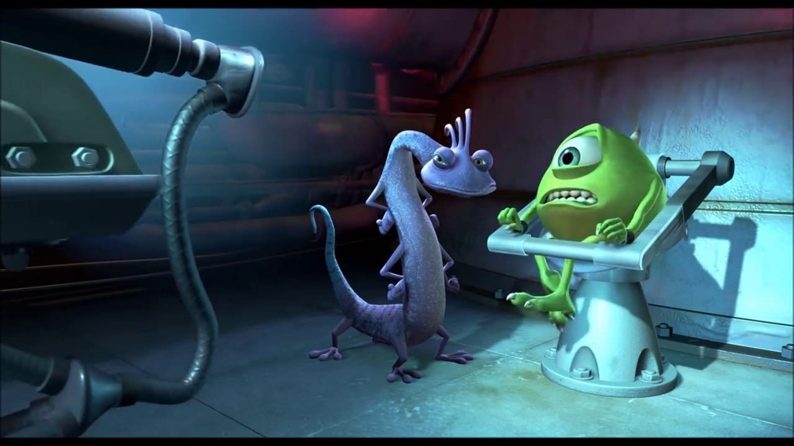

Me considero un monstruo con iniciativa, compromiso... y de género indeterminado.
Actualmente trabajo como Copropietario en Monstruos S.A., una prestigiosa fábrica de sustos reconocida en toda la ciudad de Monstropolis. El objetivo de la compañía se basa en producir energía a partir de gritos de niños humanos.
|  | |